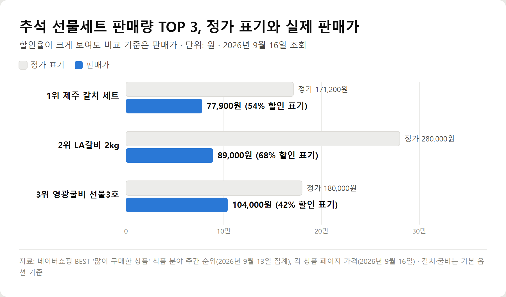

<meta charset="utf-8">
<title>2026 추석 선물세트 판매량 TOP 3 — 갈치·LA갈비·영광굴비 — 나의 투자 그리고 행복한 여행</title>
<meta name="description" content="네이버쇼핑 BEST 주간 구매 순위(9월 13일 집계)로 본 2026 추석 선물세트 판매량 1~3위. 제주 갈치 세트·LA갈비 2kg·영광굴비의 구성과 옵션별 가격, 원산지, 발송 일정, 정가 대비 할인율 볼 때 주의점까지 비교합니다.">
<meta name="viewport" content="width=device-width, initial-scale=1">
<link rel="canonical" href="https://worldtraveler1.tistory.com/68">
<link rel="preconnect" href="https://fonts.googleapis.com">
<link rel="preconnect" href="https://fonts.gstatic.com" crossorigin>
<link rel="stylesheet" href="https://fonts.googleapis.com/css2?family=Hahmlet:wght@400;600;800&family=IBM+Plex+Mono:wght@400;500&family=IBM+Plex+Sans+KR:wght@300;400;500;600&display=swap">

<style>
  :root{
    --paper:#F2EEE6;--surface:#FAF8F3;--surface-2:#E7E1D5;
    --ink:#191510;--ink-2:#4A4235;--ink-3:#7D7364;
    --line:#D6CEBF;--line-soft:#E4DDD0;--accent:#B06A15;--accent-bright:#C2761A;
    --up:#E5484D;--down:#3B82F6;
    --f-display:"Hahmlet",'Nanum Myeongjo',"Apple SD Gothic Neo",serif;
    --f-body:"IBM Plex Sans KR","Apple SD Gothic Neo","Malgun Gothic",sans-serif;
    --f-mono:"IBM Plex Mono","SFMono-Regular",Consolas,monospace;
    --pad:clamp(20px,5vw,64px);
  }
  @media (prefers-color-scheme:dark){
    :root:not([data-theme="light"]){
      --paper:#0B1120;--surface:#121A2C;--surface-2:#1A2439;
      --ink:#E9EEF7;--ink-2:#A9B5C9;--ink-3:#72809A;
      --line:#26314A;--line-soft:#1D2739;--accent:#E8A33D;--accent-bright:#F0B45C;
    }
  }
  *{box-sizing:border-box;}
  body{margin:0;background:var(--paper);color:var(--ink);font-family:var(--f-body);
    font-weight:300;font-size:1rem;line-height:1.75;-webkit-font-smoothing:antialiased;}
  a{color:inherit;}
  img{max-width:100%;height:auto;}
  .wrap{max-width:760px;margin:0 auto;padding-inline:var(--pad);}
  .nav{position:sticky;top:0;z-index:20;background:color-mix(in srgb,var(--paper) 88%,transparent);
    backdrop-filter:saturate(180%) blur(12px);border-bottom:1px solid var(--line);}
  .nav-in{display:flex;align-items:center;justify-content:space-between;height:58px;}
  .brand{font-family:var(--f-display);font-weight:600;font-size:1rem;letter-spacing:-.02em;text-decoration:none;}
  .back{font-family:var(--f-mono);font-size:.72rem;color:var(--ink-3);text-decoration:none;}
  .article{padding-block:clamp(40px,7vw,72px) clamp(56px,9vw,96px);}
  .eyebrow{font-family:var(--f-mono);font-size:.68rem;letter-spacing:.16em;text-transform:uppercase;
    color:var(--accent);margin:0 0 14px;}
  h1{font-family:var(--f-display);font-weight:800;font-size:clamp(1.6rem,4.4vw,2.3rem);
    line-height:1.3;letter-spacing:-.03em;margin:0 0 16px;}
  .byline{font-family:var(--f-mono);font-size:.72rem;color:var(--ink-3);
    padding-bottom:24px;border-bottom:1px solid var(--line);margin-bottom:32px;}
  h2{font-family:var(--f-display);font-weight:600;font-size:1.25rem;letter-spacing:-.02em;margin:42px 0 14px;}
  h3{font-family:var(--f-display);font-weight:600;font-size:1.05rem;letter-spacing:-.02em;
    margin:30px 0 10px;padding-top:14px;border-top:1px solid var(--line-soft);}
  h3 .code{font-family:var(--f-mono);font-size:.7rem;font-weight:400;color:var(--ink-3);margin-left:6px;}
  p{margin:0 0 18px;color:var(--ink-2);}
  ul.checks{margin:0 0 18px;padding-left:20px;color:var(--ink-2);}
  ul.checks li{margin-bottom:8px;font-size:.94rem;}
  table{width:100%;border-collapse:collapse;font-size:.88rem;margin-bottom:8px;}
  th{font-family:var(--f-mono);font-size:.66rem;letter-spacing:.06em;text-transform:uppercase;
    color:var(--ink-3);text-align:right;padding:8px 6px;border-bottom:1px solid var(--line);}
  th:first-child{text-align:left;}
  td{padding:10px 6px;border-bottom:1px solid var(--line-soft);color:var(--ink-2);}
  td.num{font-family:var(--f-mono);text-align:right;font-variant-numeric:tabular-nums;}
  td.up{color:var(--up);} td.down{color:var(--down);}
  .scroll{overflow-x:auto;}
  figure{margin:22px 0;}
  figure img{display:block;border-radius:3px;background:var(--surface-2);}
  figcaption{margin-top:8px;font-family:var(--f-mono);font-size:.68rem;color:var(--ink-3);text-align:center;}
  .note{margin-top:34px;padding:16px 18px;border-left:3px solid var(--accent);
    background:var(--surface);border-radius:0 3px 3px 0;}
  .note p{margin:0;font-size:.85rem;color:var(--ink-3);}
  .foot{border-top:1px solid var(--line);background:var(--surface);padding-block:30px 38px;}
  .foot p{margin:0;font-size:.8rem;color:var(--ink-3);}
</style>

<nav class="nav">
  <div class="wrap nav-in">
    <a class="brand" href="../index.html">나의 투자 그리고 행복한 여행</a>
    <a class="back" href="../index.html#stocks">← 시황으로</a>
  </div>
</nav>

<main class="wrap article">
  <p class="eyebrow">Market</p>
  <h1>2026 추석 선물세트 판매량 TOP 3 — 네이버쇼핑 BEST 주간 순위 기준 (9월 13일 집계)</h1>
  <p class="byline">생활 · 2026-09-15 기준</p>

  <p><b>이 포스팅은 네이버 쇼핑 커넥트 활동의 일환으로, 판매 발생 시 수수료를 제공받습니다.</b></p>
  <p>한 줄 요약: 네이버쇼핑 식품 분야 주간 구매 순위에서 추석 선물세트는 제주 갈치 세트 77,900원, LA갈비 2kg 89,000원, 영광굴비 104,000원 순이었습니다.</p>
  <p>네이버쇼핑 BEST '많이 구매한 상품'(식품, 주간·일간, 2026년 9월 13일 집계)과 각 상품의 상품정보 고시·옵션을 2026년 9월 16일에 확인한 기록입니다.</p>
  <h2>추석 선물세트 판매량 TOP 3 한눈에 보기</h2>
  <ul class="checks">
    <li>1위 제주 갈치 선물세트(제주반했어) — 77,900원, 은갈치·옥돔·참조기·고등어 구성, 리뷰 29,935개</li>
    <li>2위 마장동 생 LA갈비 2kg(정육담다) — 89,000원, 미국산, 리뷰 26,962개</li>
    <li>3위 영광굴비 추석선물세트(영광굴비 보리굴비 전문점) — 104,000원, 10마리 1.05kg 내외, 리뷰 5,173개</li>
    <li>세 상품 모두 무료배송, 가격대는 7만~10만원대</li>
  </ul>
  <h2>추석 선물세트 판매 순위는 어떻게 뽑았나</h2>
  <p>네이버쇼핑 BEST의 '많이 구매한 상품'에서 식품 분야 주간 순위를 봤습니다. 9월 13일 집계분이며, 광고 표시가 붙은 상품은 없었습니다.</p>
  <p>주간 1위는 흰다리새우라 선물세트에서 뺐습니다. 선물세트만 남기면 2위 제주 갈치, 3위 LA갈비 2kg, 5위 영광굴비 순이고, 그 뒤로 한줌견과 50봉(6위), 영광 찐 보리굴비(7위), 투뿔 한우 세트(9위), 혼합 과일 세트(10위)가 이어집니다.</p>
  <p>하루 단위 순위에서는 영광굴비가 1위, 갈치가 2위, 다른 판매자의 찐 보리굴비가 3위, LA갈비가 4위였습니다. 일간 순위는 날마다 크게 바뀌어 이 글은 주간 순위를 기준으로 삼았습니다.</p>
  <h2>검색 순위와 판매 순위는 왜 달랐을까</h2>
  <p>비슷한 시기(9월 1~14일) 네이버 데이터랩 식품 분야 인기검색어에서는 스팸선물세트(9위)와 동원참치선물세트(12위)가 앞섰습니다. 그런데 구매 순위 상위에는 통조림 세트가 보이지 않습니다.</p>
  <p>이유를 단정하기는 어렵지만, 브랜드 이름이 분명한 통조림은 검색어가 한곳으로 모이는 반면 갈치·굴비·LA갈비는 판매자마다 상품명이 달라 검색이 흩어지는 것으로 보입니다. 구매는 리뷰가 많이 쌓인 상품으로 모였고, 판매량 1·2위 상품은 리뷰가 각각 2만 개를 넘었습니다.</p>
  <figure><figcaption>추석 선물세트 판매량 TOP 3 정가 표기와 실제 판매가 비교 (단위: 원, 2026년 9월 16일 조회)</figcaption></figure>
  <h2>1위 제주 갈치 추석 선물세트 — 77,900원</h2>
  <ul class="checks">
    <li>판매처 — 제주반했어, 주간 구매 순위 식품 2위(선물세트 중 1위)</li>
    <li>기본 구성 — 은갈치 1, 옥돔 1, 참조기 5, 고등어 4 (옵션명 기준)</li>
    <li>원산지·보관 — 국산(제주), 냉동보관</li>
    <li>가격 — 정가 171,200원 표기, 판매가 77,900원, 배송비 무료</li>
    <li>리뷰 — 29,935개, 평점 4.91</li>
  </ul>
  <p>같은 상품에서 구성을 줄여 고를 수 있습니다. 참조기를 빼고 은갈치 1·옥돔 1·고등어 4로 담으면 53,900원, 참조기를 3마리로 줄이면 59,900원입니다.</p>
  <p>9월 16일 기준 출고일을 16일부터 21일 사이에서 고르게 돼 있습니다. 냉동 생선이라 받는 날짜를 맞춰 두면 보관이 편합니다.</p>
  <p>여러 생선을 한 상자에 담아 부모님 댁 반찬으로 두루 쓰기 좋은 세트입니다.</p>
  <p><a href="https://brandconnect.naver.com/affiliates/996183217241760?channelProductNo=4890939517" target="_blank" rel="sponsored noopener">상품 보러 가기 — 제주반했어 제주 갈치 추석 선물세트</a></p>
  <h2>2위 마장동 생 LA갈비 선물세트 2kg — 89,000원</h2>
  <ul class="checks">
    <li>판매처 — 정육담다, 주간 구매 순위 식품 3위</li>
    <li>구성 — 생 LA갈비 2kg (상품정보 고시의 중량 표기는 2kg·3kg·5kg)</li>
    <li>원산지 — 미국산</li>
    <li>가격 — 정가 280,000원 표기, 판매가 89,000원, 배송비 무료</li>
    <li>리뷰 — 26,962개, 평점 4.84</li>
  </ul>
  <p>9월 16일 기준 옵션은 16일, 17일, 18일 출발 예약으로 나뉘어 있습니다. 고급 선물포장은 일반포장보다 2,000원이 더 붙습니다.</p>
  <p>양념이 되지 않은 생갈비라 받는 집에서 원하는 대로 재워 쓸 수 있습니다. 같은 순위에 오른 투뿔 한우 세트(139,900원)보다 가격 부담이 적습니다.</p>
  <p>원산지가 미국산이라는 점은 상품명 앞쪽의 '마장동'만 보고 헷갈리기 쉬운 부분입니다. 한우를 기대하는 분께 보낼 때는 미리 확인하세요.</p>
  <p><a href="https://brandconnect.naver.com/affiliates/996183255819232?channelProductNo=5655026936" target="_blank" rel="sponsored noopener">상품 보러 가기 — 정육담다 마장동 생 LA갈비 선물세트 2kg</a></p>
  <h2>3위 영광굴비 추석선물세트 — 104,000원</h2>
  <ul class="checks">
    <li>판매처 — 영광굴비 보리굴비 전문점, 주간 구매 순위 식품 5위(일간 1위)</li>
    <li>기본 구성 — 선물3호, 굴비 10마리 21cm·1.05kg 내외, 보자기 포장</li>
    <li>원산지·보관 — 국산(전남 영광), 받는 즉시 냉동보관, 냉동 시 구매일로부터 1년</li>
    <li>가격 — 정가 180,000원 표기, 판매가 104,000원, 배송비 무료</li>
    <li>리뷰 — 5,173개, 평점 4.8</li>
  </ul>
  <p>호수와 포장에 따라 가격이 크게 달라집니다. 같은 10마리라도 크기에 따라 선물4호(20cm·0.95kg)는 79,000~84,000원, 선물2호(22cm·1.15kg)는 144,000~149,000원, 선물1호(23cm·1.35kg)는 184,000~189,000원입니다. 보자기 포장이 가방보다 5,000원 비쌉니다.</p>
  <p>집에서 드실 거라면 가정용도 있습니다. 가정4호는 20마리 19cm·1.65kg 내외에 스티로폼 포장으로 59,800원입니다.</p>
  <p>9월 16일 기준 '오늘출고(12시 이전 주문)' 옵션으로 올라와 있어 세 세트 중 발송이 가장 빠릅니다. 어른께 드리는 격식 있는 선물을 찾는다면 이 세트가 맞습니다.</p>
  <p><a href="https://brandconnect.naver.com/affiliates/996183295828160?channelProductNo=3464614768" target="_blank" rel="sponsored noopener">상품 보러 가기 — 영광굴비 보리굴비 전문점 영광 굴비 추석선물세트</a></p>
  <h2>판매량 1·2·3위 선물세트 조건 비교</h2>
  <ul class="checks">
    <li>판매가 — 갈치 세트 77,900원 / LA갈비 2kg 89,000원 / 영광굴비 선물3호 104,000원</li>
    <li>원산지 — 갈치 국산(제주) / LA갈비 미국산 / 굴비 국산(영광)</li>
    <li>보관 — 갈치·굴비 냉동보관, LA갈비는 상세 페이지의 보관 안내 확인</li>
    <li>발송 — 갈치 출고일 선택(9/16~21) / LA갈비 출발 예약(9/16~18) / 굴비 12시 이전 주문 당일 출고</li>
    <li>리뷰 — 갈치 29,935개 / LA갈비 26,962개 / 굴비 5,173개</li>
  </ul>
  <h2>정가 대비 할인율, 추석 선물세트 가격 볼 때 조심할 점</h2>
  <p>세 상품 모두 정가 대비 42~68% 할인으로 표시돼 있습니다. 하지만 이 정가는 판매자가 적어 넣는 값이라, 할인율 자체는 비교 기준이 되기 어렵습니다.</p>
  <p>비교는 판매가를 무게나 마릿수로 나눠 보는 게 정확합니다. 영광굴비 선물3호는 1.05kg에 104,000원이고, 가정4호는 1.65kg에 59,800원입니다. 크기와 포장이 다르다는 점을 감안해도 선물용과 가정용의 차이가 이렇게 큽니다.</p>
  <p>냉동 수산물 세트는 받는 집 냉동실 자리가 필요합니다. 부피가 큰 세트라면 보내기 전에 한 번 여쭤보는 것도 방법입니다.</p>
  <h2>추석 선물세트 판매량 자주 묻는 질문</h2>
  <p>Q. 올해 추석 선물세트 판매량 1위는 무엇인가요?</p>
  <p>네이버쇼핑 BEST 식품 분야 주간 구매 순위(9월 13일 집계)에서 선물세트 중 가장 높은 건 제주반했어의 제주 갈치 선물세트(전체 2위)였습니다. 하루 순위로는 영광굴비 추석선물세트가 1위였습니다.</p>
  <p>Q. 10만원 이하로 많이 팔린 추석 선물세트는?</p>
  <p>제주 갈치 세트(77,900원)와 LA갈비 2kg(89,000원)입니다. 영광굴비는 기본 옵션이 104,000원이지만 선물4호를 고르면 79,000원부터입니다.</p>
  <p>Q. 추석 전에 받으려면 언제 주문해야 하나요?</p>
  <p>추석은 9월 25일입니다. 9월 16일 기준으로 갈치 세트는 21일 출고까지, LA갈비는 18일 출발 예약까지 옵션이 열려 있었고, 굴비는 12시 이전 주문 시 당일 출고였습니다. 옵션은 수시로 닫히니 주문할 때 다시 확인하세요.</p>
  <p>Q. LA갈비 선물세트는 한우인가요?</p>
  <p>아닙니다. 판매량 2위 정육담다 LA갈비는 상품정보 고시에 원산지가 미국산으로 적혀 있습니다.</p>
  <p>Q. 굴비 선물세트 호수는 뭐가 다른가요?</p>
  <p>이 상품 기준으로 호수가 낮을수록 굴비가 크고 무겁습니다. 10마리 기준 선물1호 23cm·1.35kg, 2호 22cm·1.15kg, 3호 21cm·1.05kg, 4호 20cm·0.95kg 내외입니다.</p>
  <h2>정리 — 많이 팔린 선물세트를 고르는 기준</h2>
  <p>판매량 상위 세 세트는 모두 7만~10만원대이고, 리뷰가 수천에서 수만 개 쌓인 상품이었습니다. 생선 여러 가지를 두루 담은 갈치 세트, 부담 없는 명절 고기인 LA갈비, 격식을 갖춘 영광굴비로 쓰임새가 뚜렷하게 나뉩니다.</p>
  <p>주문 전에는 판매가·원산지·발송일 세 가지를 확인하세요. 할인율보다 이 세 가지가 명절 선물의 만족도를 좌우합니다.</p>
  <p><b>함께 보면 좋은 글</b> — <a href="https://blog.naver.com/kucoom7/224413047401">추석선물세트 검색 순위 TOP 3 (스팸·동원참치·한우)</a></p>
  <div class="note"><p>순위는 네이버쇼핑 BEST '많이 구매한 상품' 식품 분야(2026년 9월 13일 집계), 가격·옵션·리뷰 수는 2026년 9월 16일 조회 기준이며 판매자 사정에 따라 바뀔 수 있습니다. 상품 구성은 판매자가 등록한 상품정보 고시와 옵션명을 따랐습니다.</p></div>
</main>

<footer class="foot">
  <div class="wrap"><p>나의 투자 그리고 행복한 여행 · 투자 판단의 참고 자료일 뿐, 매수·매도를 권유하지 않습니다.</p></div>
</footer>
